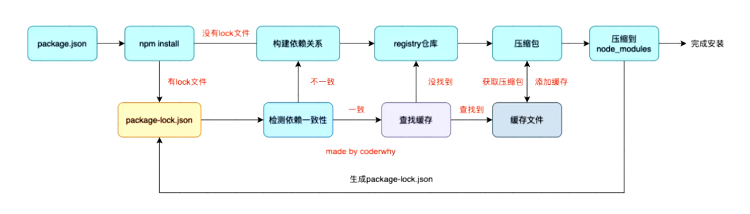
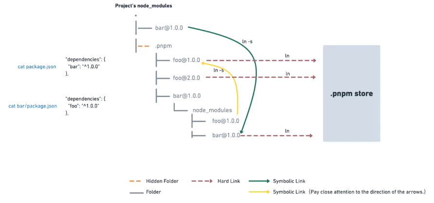

包管理工具
JavaScript 的包管理工具是管理项目依赖的核心，常见的工具包括 npm、Yarn 和 pnpm等
npm
- 定位：Node.js 官方包管理器，生态最成熟，跟随 Node.js 安装。
- 核心功能：
- 安装、更新、删除依赖（
dependencies和devDependencies）。 - 通过
package.json管理项目元数据和脚本。 - 支持全局安装（
npm install -g）和本地安装。
- 安装、更新、删除依赖（
- 依赖存储结构：
- 嵌套结构（旧版）：依赖层层嵌套，导致
node_modules体积庞大。 - 扁平化结构（v3+）：提升重复依赖到顶层，减少体积，但可能引发版本冲突。
- 嵌套结构（旧版）：依赖层层嵌套，导致
- 常见命令
1 | |
- 锁文件：
package-lock.json，记录依赖树和精确版本，确保安装一致性。 - **缓存管理 : **npm 会将下载的包缓存到本地，以提高后续安装的速度
1 | |
- 配置管理
1 | |
- npm i 原理

npx
- 定位：npm 的附属工具，用于临时执行包命令，无需全局安装。并不是一个真正的包管理工具，而是 npm 5.2.0 引入的一个命令行工具
- 核心功能：
- 直接运行****本地或远程的包（如
npx create-react-app）。- 直接执行远程 npm 包，而无需事先将其安装到本地
- 要执行本地安装的包的命令，需要使用相对复杂的路径，而 npx 简化了这个过程
- 执行不同版本的包（如
npx node@14 -v）。 - 避免全局安装污染环境。
- 直接运行****本地或远程的包（如
- 执行原理:当你运行
npx <command>时，npx 会按照以下步骤工作：- 检查本地可执行文件：首先，npx 会检查当前项目的
node_modules/.bin目录中是否存在对应的可执行文件。如果存在，它会直接执行该文件。 - 检查全局安装的包：如果本地
node_modules/.bin目录中没有找到可执行文件，npx 会检查全局安装的包中是否有该命令。 - 临时下载并执行：如果在本地和全局都没有找到对应的包，npx 会从 npm 注册表中临时下载该包到一个临时目录，然后执行其中的可执行文件。执行完成后，临时下载的包会被删除。
- 检查本地可执行文件：首先，npx 会检查当前项目的
- 常用命令：
1 | |
- 与 npm 的关系：
npm run运行package.json中的脚本。npx直接执行包的可执行文件。
package.json配置文件
- 作用：项目元数据、依赖管理、脚本定义。
- 核心字段：
1 | |
- 项目元数据
**name**：项目的名称，必须是唯一的，只能包含小写字母、数字、连字符和下划线，不能包含空格。**version**：项目的版本号，遵循语义化版本号规则（MAJOR.MINOR.PATCH），例如1.2.3。**description**：项目的简要描述，通常用于在 npm 仓库中展示。**keywords**：项目的关键词数组，有助于其他开发者在搜索时找到该项目。**author**：项目的作者信息，可以是字符串（如"John Doe"）或对象**license**：项目的开源许可证，如"MIT"、"Apache-2.0"等。**private**：如果设置为true，则该项目不能被发布到 npm 仓库，通常用于私有项目。
- 入口文件
**main**：指定项目的入口文件，当其他项目引入该项目时，默认会加载该文件。
- ** 脚本命令**
**scripts**：一个对象，用于定义项目的脚本命令。例如，"start": "node index.js"定义了一个名为start的脚本，通过npm run start或yarn start可以执行该脚本。常见的脚本命令还有test、build等。
- 依赖管理
**dependencies**：项目生产环境的依赖项，这些依赖是项目运行所必需的。例如，"express": "^4.17.1"表示项目依赖express包，并且版本要求是4.x.x系列的最新版本。**devDependencies**：项目开发环境的依赖项，这些依赖仅在开发和测试阶段使用，如测试框架、构建工具等。- 关联文件:
**package-lock.json**** 或 ****yarn.lock**：这些文件用于锁定依赖包的版本，确保在不同环境中安装的依赖版本一致。npm会自动生成package-lock.json，yarn会自动生成yarn.lock。
- 版本语法（SemVer）：
^1.2.3：允许次版本号和补丁号更新（1.x.x）。~1.2.3：仅允许补丁号更新（1.2.x）。1.2.3：固定版本。
yarn
- 定位：由 Facebook 推出的高性能包管理器，解决早期 npm 的痛点。如安装速度慢、版本不一致等
- 核心特性：
- 并行下载：依赖安装速度更快。
- 确定性安装：通过
yarn.lock确保依赖一致性。 - 工作区（Workspaces）：原生支持 Monorepo。
- 离线模式：利用缓存离线安装依赖。
- 常用命令：
1 | |
pnpm
硬链接和软连接
- 硬链接(hard link)是电脑文件系统中的多个文件平等地共享同一个文件存储单元 , 删除一个文件名字后，还可以用其它名字继续访问该文件;
- **符号链接(**软链接、Symbolic link)是一类特殊的文件 , 其包含有一条以绝对路径或者相对路径的形式指向其它文件或者目录的引用
pnpm
- 定位：高效、节省磁盘的包管理器，通过硬链接和符号链接复用依赖。
- 核心原理：
- 全局存储（Store）：
- 所有依赖包统一存储在本地磁盘的全局目录（如
~/.pnpm-store）。 - 通过 硬链接（Hard Link） 复用相同的依赖文件，避免重复下载。
- 所有依赖包统一存储在本地磁盘的全局目录（如
- 符号链接（Symlink）：
- 项目的
node_modules目录中仅包含直接依赖，子依赖通过符号链接指向全局存储。 - 严格隔离依赖树，解决“幽灵依赖”问题（未声明的依赖不可访问）。
- 项目的
- 全局存储（Store）：
依赖解析流程
- 下载依赖：首次安装时，依赖包下载到全局存储。
- 硬链接创建：项目中通过硬链接复用全局存储的文件（节省磁盘空间）。
- 符号链接组织：
node_modules中通过符号链接指向全局存储的依赖，形成严格的依赖树。

- 常用命令：
1 | |
1 | |
1 | |
1 | |
1. 独特的存储机制
pnpm 使用硬链接和符号链接来管理 node_modules。它将包存储在全局存储中，当项目需要某个包时，会在项目的 node_modules 目录中创建指向全局存储中该包的硬链接和符号链接，而不是将包完整地复制到每个项目的 node_modules 中。这种方式带来了以下优势：
- 节省磁盘空间：避免了相同包在不同项目中重复安装，大大减少了磁盘空间的占用。例如，多个项目都依赖
lodash，只需要在全局存储中存储一份lodash包，各个项目通过链接引用即可。 - 安装速度快：由于不需要重复下载和复制相同的包，pnpm 的安装速度通常比 npm 和 yarn 更快，尤其是在处理大型项目和复杂依赖关系时，优势更为明显。
2. 依赖隔离与一致性
pnpm 能够更好地实现依赖隔离，确保每个项目使用的依赖版本是一致的。它会严格按照 pnpm-lock.yaml 文件（类似于 package-lock.json 或 yarn.lock）中的版本信息进行安装，避免了因版本不一致导致的问题。
3. 扁平化依赖管理
pnpm 对依赖进行了更有效的扁平化处理，使得 node_modules 目录结构更加清晰，减少了依赖嵌套过深带来的问题。
包管理工具
http://example.com/2025/03/01/包管理工具/